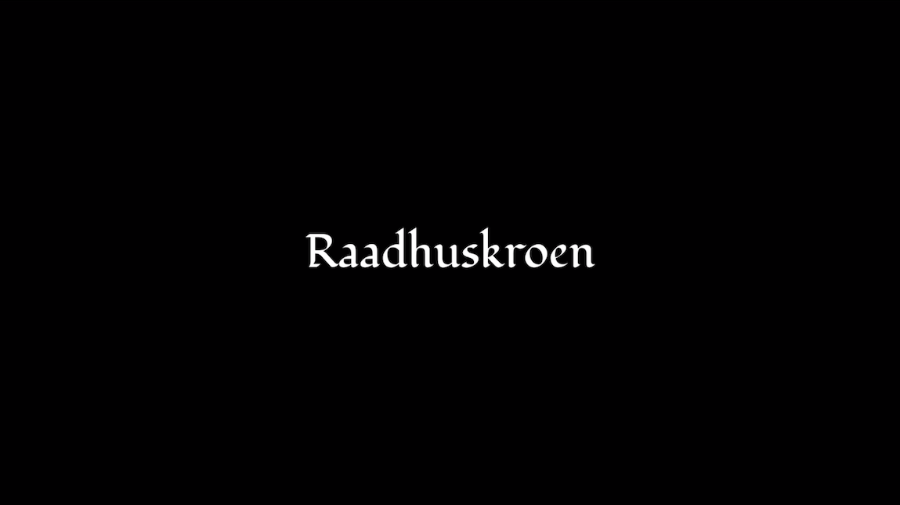
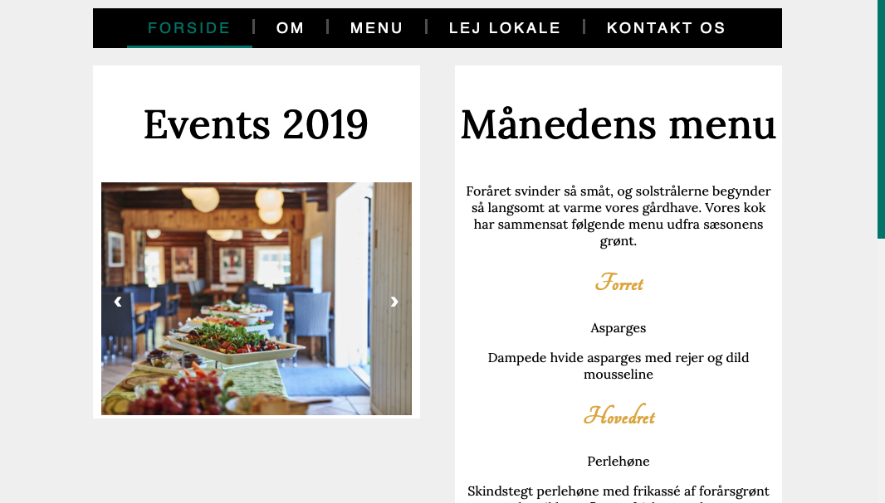

Web
Responsive stilarts site
I tema 1 blev vi introduceret for HTML og CSS. Vi lærte at opbygge et HTML skeleton som jeg har brugt i samtlige tema efterfølgene. Vi lærte også at style forskellige elemter igennem css og gør websites tilgængeligt på mobile browsere ved hjælp af flexbox. Vi lærte også at layout er vigtigt i opbyggelse af et website. Vi arbejdede med styletyles og opbyggelse af disse igennem vores opgave omkring stilarter
LinkAnimation
sex og samfund
I tema 2 lærte vi om animationer, og hvordan vi kunne bruge disse til at få vores elementer på websites til at bevæge sig. Vi brugte også forskellige idegenererings teknikker til at f.eks moodboard og skitser til vores spil. vi tegnede selv elemterne til vores spil, og lærte om skalerebare objekter. Tema 2 sluttede af med vi Programerede et spil for sex og samfund. i denne opgave stod jeg for det meste for Kodningen, da jeg følte at det var der jeg haltede lidt
LinkIndhold
Video
Tema 3 startede med at handle om at lave content til vores sites. Temaet startede med at vi arbejde med forskellige former for medier i form af video og lyd. Derefter blev vi intruduceret for hvordan vi kunne lave storyboards til video og forskellige redigerings programmer som Premiere Pro og Audition
LinkIndhold
Redesign
Sidste i tema 3 blev vi intruduceret for en case hvor vi skulle lave et redesign af et eksisterende site. Vi valgte at lave et redesign på Raadhuskroens site, da vi følte at det kunne bruge en update. Mit primære område i denne opgave var at stå for at lave content i form af video og stillbilleder
LinkUX
Prototype

I starten af tema 4 blev vi introducrede for forskellige måde at håndtere projekter på. i klassen fik vi stillet til opgave at forbedre Fronters portal til bedre at kunne appelere til de studerende på KEA. vi arbejder med design sprints som er et 5 dags forløb hvor man strukurede går igennem forskellige faser. Efter vi havde opbygget vores egen prototype, fik vi til opgave at programere en prototype som vi fik udleveret.
LinkUX
Native app
Sidst i tema 4 fik vi udleverede en case som omhandlede at vi skulle i grupper lave en design sprint omkring en idè til en app som vi synes manglede. I denne case valgte vi at programere en prototype til TECHLOUNGE som kan håndtere udlånd og aflevering af forskellige objekter. Denne app skulle også gøre det mere overskuligt at finde ud af hvad de kan udlånde og hvad der var på lager
Link